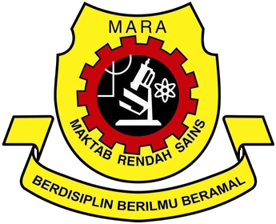
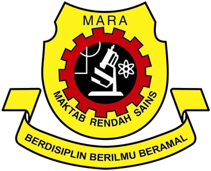

Education Background
PRIMARY SCHOOL: SK Batu Gajah, Tanah Merah, Kelantan
SECONDARY SCHOOL: MRSM Besut, Terengganu
DIPLOMA: Kolej Poly-Tech Mara Bangi, Selangor
CGPA: 3.60
BACHELOR DEGREE: UNIVERSITI TEKNOLOGI MARA (UiTM), Cawangan Kelantan, Kampus Kota Bharu, Kelantan